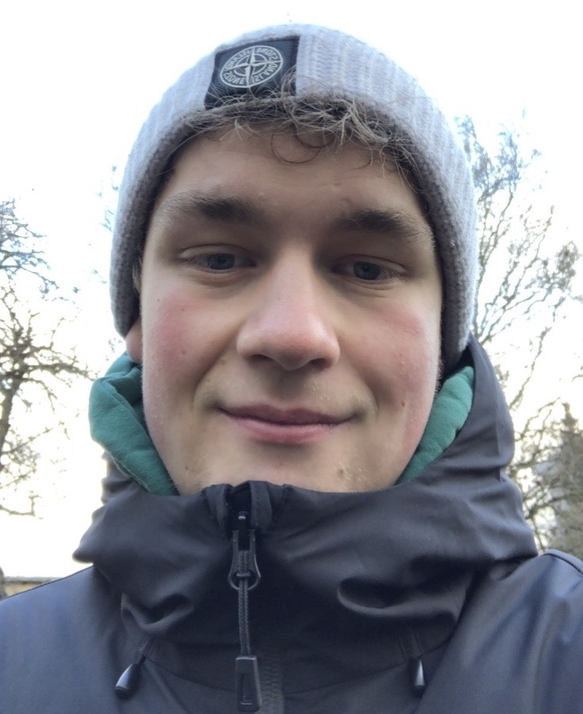

Hans Nielsen

Jeg er en 22 år gammel ung mand der er født og opvokset på Østerbro.
Jeg har altid været glad for at være aktiv og spille computer
og har de senere år brugt mere og
mere tid ved tasterne.
Jeg har derfor valgt at studere IT-arkitektur på KEA.
Dette er min portefølje, som helt klart er
work in progress
og jeg glæder mig til at se, hvor de næste tre et halvt år
bringer den
og
jeg hen.
I min fritid spiller jeg fodbold på et hold mine venner og jeg har startet.
Derudover bruger jeg
meget
tid
på discord, i nattelivet
og generelt bare kvalitetstid med dem jeg holder af.
Education
- Currently studying IT-Architecture at Kea (Copenhagen School of Design and Technology)
- 2016-2019 STX from Gefion Gymnasium
- Natural science student (Biology A, Mathematics A og Physical education B)
- 2006-2016 Completion of 0-9. class from Strandvejsskolen
Work Experience
- 2016-2018 Service assistant at Føtex Food
- 2018-2019 Service assistant at Netto
- 2020-2021 pedagogical assistant at the institution Børnehuset Emdrup/Søgård
- 2021-2021 Service assistant Serwiz - Øksnehallen vaccinationscenter
- 2022-2022 IT-support at Just Eat